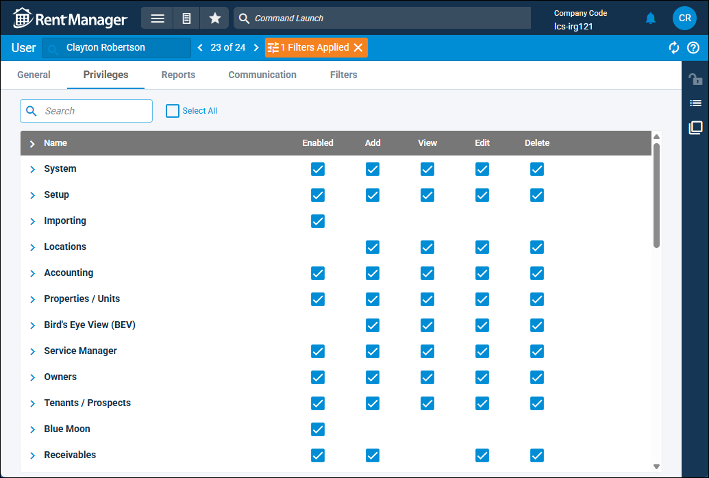
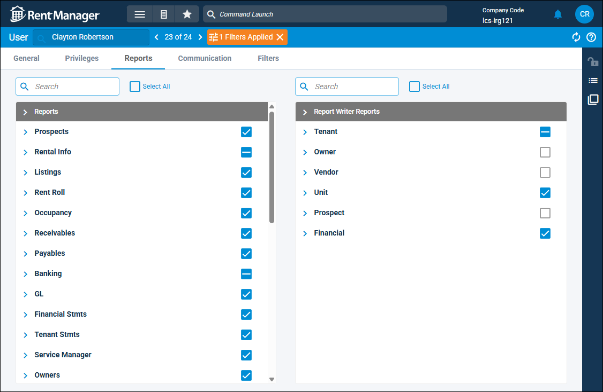
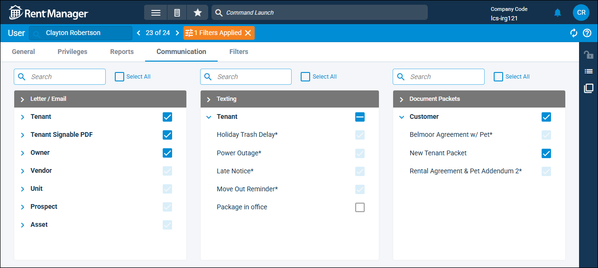
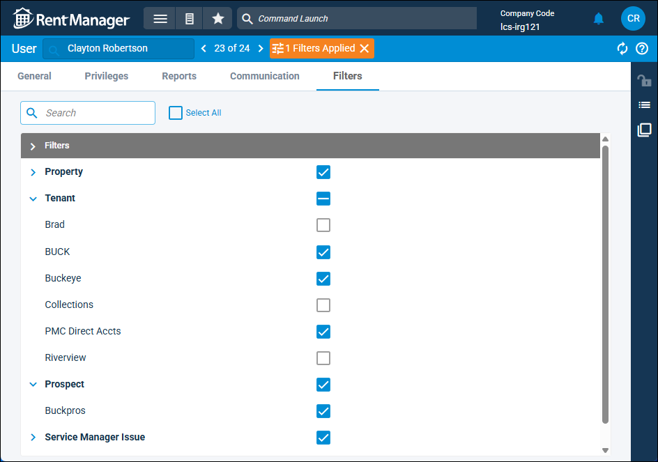

Source: https://rmxhelp.rentmanager.com/Topics/Express/Other/Users-Control-Access.htm
Control User Access
Managing what each user can view and do in Rent Manager is critical in maintaining your system security. Once a user account is created, you can view and update the user's privileges in Rent Manager, reports which the user can run, and letter, email, and text templates the user can generate and send. Additionally, you can create user roles to save a set of privileges which can then be applied to any user. For more information, refer to User Roles (Page).
Some privileges, such as what properties and banks the user can view, are controlled on the User details page. For more information about managing those privileges, refer to Limit Access to a Property and Limit Access to a Bank or Credit Card.
Related Privileges
| Group | Privilege | Column |
|---|---|---|
|
System |
Manage all users and privileges |
Add, View, Edit |
Privileges Tab
The Privileges tab displays privilege groups and lets you specify which privileges to grant to the selected user. For example, if a user needs to add a charge to a tenant account, in the Tenants/Prospects privilege group, the user requires the Tenants privilege to View. Additionally, in the Receivables privilege group, the user also requires, the Tenant transactions privilege to Add.

The blue box with a white dash indicates that the user is granted access to some but not all privileges of this type in this group.
More Information
If the blue box with checkmark is faded, this indicates that the privilege is granted to the user via a user role. Additionally, any access granted on user role cannot be edited from the user account's Communication tab. For more information, refer to User Roles (Page).
Assign Privileges
To assign privileges to an existing user, do the following:
-
If applicable, check or uncheck the box to the right of in the top left of the privileges list to select all or deselect all privileges.
-
Click a group arrow to expand the group into its individual privileges.
-
Check or uncheck privilege boxes to grant access or deny access to the privilege.
-
Select additional privilege groups as needed, and assign privileges to the user.
-
Click Save to accept your changes for that user.
The user has access to all privileges notated with .
Reports Tab
The Reports tab is where access to reports and custom Report Writer (RW) reports can be assigned to the user. Reports are displayed in groups, and you can assign an entire group of reports or specific reports from a group to a user. For example, if a user needs to access the Lease Expiration report, in the Occupancy section, you must check the Lease Expiration report in the list.

The blue box with a white dash indicates that the user is granted access to some but not all reports of this type in this group.
Assign Reports to a User
To grant an existing user access to reports, do the following:
-
If applicable, check or uncheck the box to the right of in the top left of the Reports or Report Writer Reports sections to select all or deselect all reports.
-
Check a report group to grant access to all reports in that group or click a group arrow to expand the group into its individual reports.
-
Check or uncheck report boxes to grant access or deny access to each report.
-
Click Save to accept your changes for that user.
The user has access to all reports notated with .
Communication Tab
The Communication tab is where access to letter and email templates, signable templates, text templates, and document packets can be assigned to the user. All templates and packets are organized in groups, and you are able to assign an entire group of templates or packets from a group to the user. For example, if a user requires access to the Late Notice letter/email template, in the Tenant group, you must check the Late Notice letter in the list.

The blue box with a white dash indicates that the user is granted access to some but not all templates or packets in the group.
More Information
The gray box with a checkmark indicates that the template or packet is assigned to All Users on the template/packet's settings. If the blue box with checkmark is faded, this indicates that the user is individually assigned to the template/packet's settings. Any access granted on the template/packet settings cannot be edited from the user account's Communication tab. For more information, refer to Control Letter / Email Template Access.
Assign Templates or Packets to a User
To grant an existing user access to templates and/or packets, do the following:
-
If applicable, check or uncheck the box to the right of in the top left of the Letter/Email, Texting, or Document Packets section to select all or deselect all templates and/or packets.
-
Check a group to grant access to all items in that group or click a group arrow to expand the group into its individual templates or packets.
-
Check or uncheck boxes to grant access or deny access to each template or packet.
-
Click Save to accept your changes for that user.
The user has access to all templates or packets notated with .
Filters Tab
The Filters tab is where access to system filters—custom search criteria that can saved and reused for multiple searches and entities—can be granted to the user. System filters are displayed in groups, and you can assign an entire group of system filters or specific system filter from a group to a user. For example, if a user requires access to a custom-created system filter to view tenants leasing at Buckeye Hall, in the Tenant group, you must check the Buckeye system filter in the list.

The blue box with a white dash indicates that the user is granted access to some but not all system filters of this type in this group.
Assign System Filters to a User
To grant an existing user access to system filters, do the following:
-
If applicable, check or uncheck the box to the right of in the top left of the filters list to select all or deselect all system filters.
-
Check a group to grant access to all items in that group or click a group arrow to expand the group into its individual system filters.
-
Check or uncheck boxes to grant access or deny access to each system filter.
-
Click Save to accept your changes for that user.
The user has access to all system filters notated with .